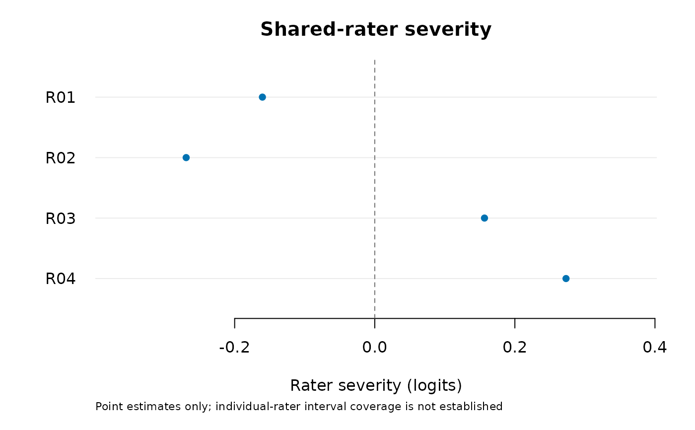

Fit a rating-scale model with shared random rater severity
Source:R/api-random-rater.R
fit_mfrm_random_rater.RdEstimate rater severity when the raters are modeled as draws from a specified
population. Each rater has one effect shared across everyone they rate.
The rating-scale model (RSM) uses approximate marginal maximum likelihood,
with optional additive fixed facets. For a local effect within one person's
performance instead, see fit_mfrm_testlet().
Usage
fit_mfrm_random_rater(
data,
person,
rater,
score,
facets = character(),
score_levels,
rater_sd = NULL,
quad_points = 31L,
maxit = 300L,
missing = c("fail", "omit"),
person_sd = NULL,
person_variance_max = 16
)
# S3 method for class 'mfrm_random_rater'
summary(object, ..., calibration_intervals = c("none", "normal"), level = 0.95)
# S3 method for class 'mfrm_random_rater'
print(x, ...)Arguments
- data
Long-format data, one row per observed or assigned rating.
- person, rater, score
Names of the person, rater and numeric score columns.
- facets
Character vector of fixed-facet columns; default none. Include task or criterion columns explicitly when their difficulties are part of the intended model; their presence in
dataalone does not include them.- score_levels
Required consecutive integer score categories, in order.
- rater_sd
NULLestimates the population SD of rater severity. A nonnegative number fixes it as known; zero removes rater heterogeneity.- quad_points
Number of standard-normal Gauss-Hermite points for each person integral, from 7 to 241; default 31. The result is also evaluated at
2 * quad_points + 1points to check this integral's numerical stability. This check does not assess the separate rater Laplace approximation. Ifchecks$PersonQuadratureStableis false, refit with more points and recheck all ofchecks; a higher-order evaluation alone does not refit the calibration. No allowed order is universally sufficient.- maxit
Maximum optimizer iterations per start; default 300.
- missing
"fail"(default) refuses missing assigned scores;"omit"explicitly analyzes observed scores and records omitted rows.- person_sd
NULL(default) estimates the normal ability SD. A finite positive number fixes it as known;person_sd = 1retains the standard normal population. This is a population restriction with Rasch slope one.- person_variance_max
Positive upper search bound for estimated ability variance; default 16. Reaching it fails numerical readiness; increase the bound and refit rather than interpreting a capped estimate as a solution.
- ...
Unused by summary and print.
- calibration_intervals
For summaries,
"none"(default) omits calibration bounds;"normal"explicitly requests their pointwise normal approximation. This does not select individual-rater intervals.- level
Nominal level for explicitly requested summary calibration intervals; default 0.95. Numerical and variance-boundary restrictions remain.
- x, object
A fitted
mfrm_random_raterobject.
Value
An mfrm_random_rater object with calibration_table, raters,
full covariance matrices, checks, analysis data/omitted-row accounting,
model settings and optimizer records. It contains no native pointers;
save it with saveRDS(). Its summary, plot and prediction methods are
specific to this model; it is not an ordinary mfrm_fit or portable
fixed-facet calibration object.
Details
The adjacent-category logit is $$\log\{P(Y_{prj}=k)/P(Y_{prj}=k-1)\} = \theta_p-u_r-x_{prj}'\beta-\delta_k.$$ Persons are independent \(N(0,\sigma_p^2)\) and raters independent \(N(0,\sigma_r^2)\), independent of persons and assignment. Fixed-facet level effects sum to zero. Steps are unconstrained adjacent thresholds; they need not be ordered or sum to zero. Their mean sets the overall location. Rater effects are not centered within the observed sample.
This is a frequentist likelihood fit, with no priors on calibration or variance parameters. Person effects are integrated by quadrature conditional on all shared rater effects; the resulting joint rater integral uses the Laplace approximation through the optional RTMB package. Integrating a new rater separately for each person would fit a different model.
The initial scope is RSM, unit weights, a connected person-rater design, multiple persons per rater, and full-rank additive fixed-facet coding. Every declared category must occur. Nonassigned combinations are absent; omitted scores are not imputed. Informative assignment, nonnormal rater populations, PCM, anchors, interactions, testlets and latent regression are not implemented by this route. Connectedness alone does not guarantee adequate information about rater variance.
Both estimated zero variances are considered explicitly. One-sided variance scores check these boundaries; the derivative with respect to SD alone cannot establish them. The ability-variance score uses checked one-sided differences of the complete approximate marginal likelihood, including the rater Laplace determinant. At either estimated boundary, regular calibration and rater intervals are withheld. A fixed zero SD is a known submodel, not a fitted model with arbitrary fixed rater severities.
Fixed-facet and step tables retain estimates and approximate SEs but omit
bounds by default. confint(fit, parm = "calibration", level = 0.95) or
summary(fit, calibration_intervals = "normal", level = 0.95) explicitly
requests observed-information normal approximations at an interior fit.
Their finite-sample coverage is not established. Rebuilding summaries or
mfrm_results() from an older saved fit applies this policy without
refitting or changing the saved fit. Population-SD intervals are requested
separately with confint(fit, parm = "rater_sd"); no ability-SD interval
is supplied. This avoids a Wald interval
that excludes zero by construction. Rater estimates are conditional modes. Their
ConditionalSD holds calibration fixed; PredictionSE adds first-order
calibration uncertainty through RTMB's generalized delta method. Individual
rater interval bounds are missing by default: nominal coverage is not
established. confint(fit, parm = "raters") explicitly requests the normal
approximation from saved estimates without refitting; plot(fit, intervals = "normal") displays it. These target realized random effects,
not fixed-rater coefficients, and do not classify or exclude raters.
This output restriction does not correct interval coverage.
With estimated ability SD, a four-condition study (200 datasets per
condition) found conditional individual-rater coverage of 91.6–91.8% with
six raters and 94.0–94.1% with 24 raters; finite-interval availability was
99% and 87–88%, respectively. None met the prespecified combined coverage
and availability criterion. Six-rater Monte Carlo uncertainty also
prevented a conclusive material-undercoverage decision in this study.
An earlier known-ability-SD pilot found 84.2% six-rater coverage. See
vignette("mfrmr-random-raters") for designs and Monte Carlo intervals.
These studies do not establish a safe minimum rater count. Numerical
checks do not certify statistical validity or shared-rater Laplace accuracy.
Numerical evidence
An independent comparison evaluated local marginal-likelihood changes at eight saved calibrations for three-category RSMs with 240 Persons, six or 24 raters, and rotating or weakly linked assignments. Displacements spanned all six calibration coordinates and named contrast/SD directions, scaled to one local information unit. All 144 planned comparisons (128 distinct parameter points) met a 0.05-log-likelihood-unit tolerance including Monte Carlo uncertainty. The largest difference was 0.005 log-likelihood units. The reference reused joint posterior samples with an exact change-of-variables identity; the package likelihood and estimator were unchanged.
This supports the tested local likelihood changes, not an exact maximum-
likelihood solution, an absolute likelihood normalization, the entire SD
profile, variance boundaries or repeated-sampling interval coverage. Person
quadrature checks remain distinct from this comparison. See
vignette("mfrmr-random-raters") for the reference-precision limits and scope.
Model assumptions and related research
A shared rater effect represents differences in usual severity across raters, not inconsistency within a rater or differential severity toward a subgroup. Van den Noortgate et al. (2003, equation 7) describe crossed normal effects for binary responses. The binary case here has that sharing structure, with the rater sign reversed and unit Rasch slope. Huang and Cai (2024) extend crossed effects to item-level ordinal responses, using cumulative graded-response probabilities and estimated slopes. Their model and estimator are not this adjacent-category RSM and Laplace fit.
Fixing ability variance at one while keeping the Rasch slope at one is a population restriction, not merely a change of units. The default estimates this variance, keeping the ability mean zero and step location free. It does not fit group-specific distributions or latent regression. Unequal ability populations across rater panels can violate its assumptions even when the assignment is connected. A successful numerical check cannot assess those population assumptions. Earlier saved fits without ability-population parameters retain their original known N(0,1) meaning for predictions, profiles and bootstrap refits.
Comparison with fixed-rater MFRM
Compare the same observed rating events, categories, fixed facets and
ability population. Fixed rater effects describe the observed panel;
random effects refer to a population and are shrunk toward its mean.
Their raw locations need not share an origin. Compare aligned rater
contrasts or predictions at the same ability and facet settings.
Setting rater_sd = 0 removes all rater differences; it does not recover
a model with freely estimated fixed rater effects. Shared raters induce
dependence across Persons after marginalization, so a Person-count BIC
or ordinary chi-squared likelihood-ratio test must not be copied from the
fixed-facet model. compare_mfrm() checks matched events and compares
centered facet summaries, retaining each model's assumptions and readiness.
It does not rank models or calculate intervals for their differences.
References
Van den Noortgate, W., De Boeck, P. and Meulders, M. (2003). Cross-classification multilevel logistic models in psychometrics. Journal of Educational and Behavioral Statistics, 28, 369–386. doi:10.3102/10769986028004369 .
Huang, S. and Cai, L. (2024). Cross-classified item response theory modeling with an application to student evaluation of teaching. Journal of Educational and Behavioral Statistics, 49, 311–341. doi:10.3102/10769986231193351 .
Kristensen, K., Nielsen, A., Berg, C. W., Skaug, H. and Bell, B. M. (2016). TMB: Automatic differentiation and Laplace approximation. Journal of Statistical Software, 70(5), 1–21. doi:10.18637/jss.v070.i05 .
See also
score_mfrm_random_rater(), predict.mfrm_random_rater(), plot.mfrm_random_rater(),
mfrm_response_diagnostics() for descriptive posterior predictive residuals,
confint.mfrm_random_rater(), mfrm_random_rater_intervals(), mfrm_results()
Examples
# Inspecting this saved synthetic fit does not require RTMB.
example <- readRDS(system.file("examples", "extended-models.rds", package = "mfrmr"))
fit <- example$random_rater$fit
# To refit instead, install optional RTMB >= 2.0 and run:
# ratings <- load_mfrmr_data("example_core")
# fit <- fit_mfrm_random_rater(ratings, "Person", "Rater", "Score",
# facets = "Criterion", score_levels = 1:4, quad_points = 121)
summary(fit)
#> $calibration
#> Parameter Facet Level Estimate SE Lower Upper
#> 1 Fixed facet Criterion Accuracy 0.23147642 0.08215730 NA NA
#> 2 Fixed facet Criterion Content -0.38637722 0.08391967 NA NA
#> 3 Fixed facet Criterion Language 0.09062358 0.08137271 NA NA
#> 4 Fixed facet Criterion Organization 0.06427722 0.08130389 NA NA
#> 5 Step Score 2 -1.20199830 0.23041987 NA NA
#> 6 Step Score 3 -0.05327141 0.21307110 NA NA
#> 7 Step Score 4 1.26465868 0.23030176 NA NA
#> 8 Population SD Rater Rater population 0.25403161 0.10660909 NA NA
#> 9 Population SD Person Person population 0.96867912 0.12319493 NA NA
#>
#> $raters
#> Rater Persons Estimate ConditionalSD PredictionSE Lower Upper
#> 1 R01 48 -0.1603836 0.1228651 0.1492867 NA NA
#> 2 R02 48 -0.2692240 0.1230288 0.1514160 NA NA
#> 3 R03 48 0.1566218 0.1228254 0.1492172 NA NA
#> 4 R04 48 0.2730197 0.1229746 0.1514764 NA NA
#>
#> $checks
#> OptimizerCode MaxGradient ZeroVarianceScore EstimatedVarianceBoundary
#> 1 0 3.494416e-05 1463.155 FALSE
#> HigherOrderZeroVarianceScore EstimatedPersonVarianceBoundary
#> 1 1463.155 FALSE
#> PersonVarianceUpperBoundary PersonZeroVarianceScore PersonZeroScoreDifference
#> 1 FALSE 1954.208 0.001859842
#> HigherOrderPersonZeroVarianceScore HigherOrderPersonZeroScoreDifference
#> 1 1954.208 0.001859848
#> QuadraturePoints CheckPoints LogLikDifference GradientDifference
#> 1 121 243 5.89398e-09 1.949798e-07
#> NumericalReady InformationPositive
#> 1 TRUE TRUE
#>
#> $calibration_intervals
#> $calibration_intervals$method
#> [1] "none"
#>
#> $calibration_intervals$level
#> [1] 0.95
#>
#>
#> $settings
#> $settings$method
#> [1] "MML: Person quadrature and shared-rater Laplace"
#>
#> $settings$model
#> [1] "RSM"
#>
#> $settings$person_distribution
#> [1] "N(0, person_sd^2)"
#>
#> $settings$rater_distribution
#> [1] "N(0, rater_sd^2)"
#>
#> $settings$fixed_rater_sd
#> NULL
#>
#> $settings$fixed_person_sd
#> NULL
#>
#> $settings$person_variance_max
#> [1] 16
#>
#> $settings$quad_points
#> [1] 121
#>
#> $settings$maxit
#> [1] 300
#>
#> $settings$missing
#> [1] "fail"
#>
#> $settings$RTMB_version
#> [1] "2.0"
#>
#>
#> $data_usage
#> Input Analyzed Omitted
#> 768 768 0
#>
#> $notes
#> [1] "Calibration bounds are omitted by default; SEs are observed-information approximations. Request calibration_intervals = 'normal' explicitly to inspect pointwise bounds."
#> [2] "Individual-rater intervals are not supplied automatically: nominal coverage is not established. PredictionSE is a first-order approximation. Use confint(object, parm = 'raters') only to inspect that normal approximation."
#> [3] "Person quadrature checks do not assess the shared-rater Laplace error."
#>
plot(fit)

system.file("examples", "extended-models.R", package = "mfrmr")
#> [1] "/home/runner/work/_temp/Library/mfrmr/examples/extended-models.R"